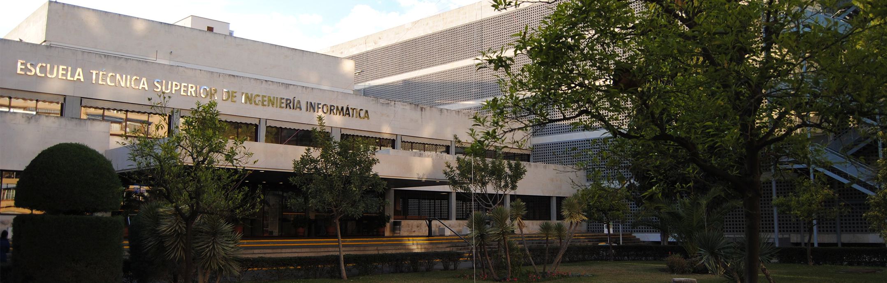
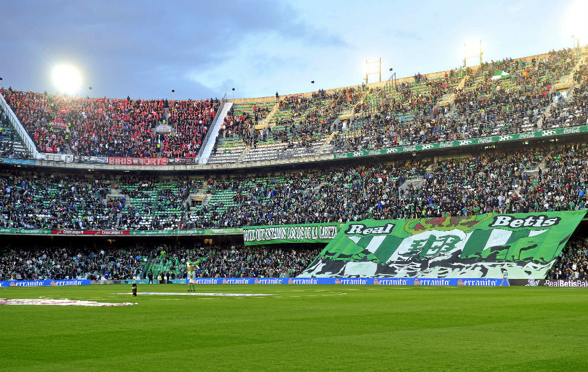

2. Estudios
Hice el bachillerato de ciencias de la salud y quería estudiar matemáticas, informática o astronomía. Finalmente entré en la carrera de Ingeniería Informática del Software.
Esta es una foto de mi facultad:

Actualmente estoy estudiando tercero de carrera de erasmus en Porto.
3. Aficciones
Una de las cosas que más me gusta hacer es escuchar música e ir a conciertos, es una de las mejores experiencias que existe. Me gusta el baile y el fútbol.
También me gusta ver series y películas. Mi serie favorita es Games of thrones.


4. Viajes
He estado viajando por diferentes partes de España como Barcelona, Galicia, Madrid, Valencia. De Portugal he visitado Lisboa, Oporto, Cascais y he hecho una ruta en coche por el Algarve.
Además he viajado a Londres y Dublín y he estado por varias ciudades de Francia.